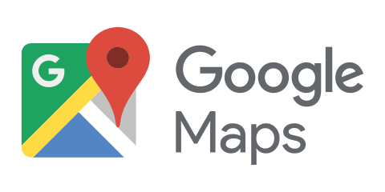

Hébergement de fichiers

Logiciel alternatif à 
Avantages
- Ne stock pas les adresses IP - Ne collecte pas les données personnelles - N'utilise pas de cookies / Ne possède pas de ciblage publicitaires - Paramètrage de look des recherches possible
Fonctions similaires à GoogleMaps :
- Pemet de rechercher des pages web et videos - Fait des suggestions par mots-clés
Télécharger le logiciel